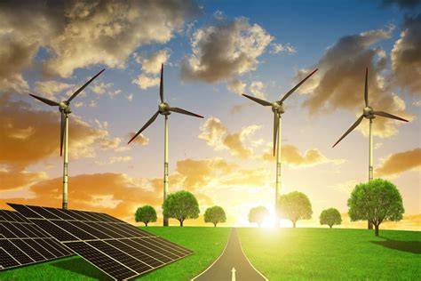

How Rewnewable energy can aid climate change issues

Coal power plants, fossil fuels and other non-renewable have been affecting climate change severely since 1750 and as of recent times. the global concentration of co2 in the atmosphere is 421 ppm which is a 50% increase since the start of the industrial revolution,(McCaull, 2008) to counteract this we need to start developing more renewable energy sources and increasing the efficiency of the ones we have today.
Windmill power plants
Windmills are a promising alternative to non-renewable sources energy as its energy source is completely renewable. however, they can only be placed in locations with high amounts of wind requiring wind speeds of 5 m/s or more for windmills to be economically viable. (UtilitySmarts, 2021) Windmills are also expensive costing around $1 million dollars per megawatt (Clarion Energy Content Directors, 2014;) they require a lot of maintenance to keep functional as ice build-up on the blades causing the windmills effectiveness to drop dramatically which is a struggle for windmills built in colder climates such as the Switzerland alps and many regions of north America and China.(Barber et al., 2011) Furthermore A sizeable chunk of land needs to be allocated for windmills otherwise turbulence from surrounding turbines will cause their effectiveness to drop with an 80 meter wide rotor requiring 560 meters worth of spacing from adjacent turbines,(McCaull, 1973) because of this arrays of turbines can took up thousands of acres of land such as the Alta Wind Energy Centre which houses more than 600 wind turbines and takes up more than 130 square kilometres of land. (Leonard L, 2021) computing could help develop this form of energy by decreasing the cost of maintenance by implementing better sufficiency. By writing and implementing autonomous maintenance systems the cost of maintenance could be decreased, we could also use computers to simulate environments that generate sufficient wind to either power the windmills efficiency or maximise the amount of power a windmill can generate computers could also keep track of wave patterns to predict locations that are free of rogue waves which could damage offshore wind turbines.
Hydropower plants
Hydropower plants is another promising alternative to non-renewable sources of energy as it’s also a completely renewable energy source. It is also inexpensive in the long run as hydropower plants (after their initial construction) don’t require anywhere close to as much maintenance as wind turbines. however even with the low maintenance cost their initial cost of construction is extremely expensive this is because the sheer scale of hydropower plants unlike wind turbine farms which are modular due to the main cost coming from the turbines themselves so can increase and decrease in size depending on the projects budget simply by adjusting the amount of wind turbines planned to be installed. however, hydropower plants are massive structures that need to take up the length of the body of water because of this, projects set around hydropower have a minimum budget required that if not met will doom the project. This means the country that wants to undertake a project like this must have a sizable amount of spendable capital. Hydropower plants also drastically alter the environment around them potentially causing droughts which could dry up rivers and destroy critical water sources for villages and river eco-systems which is heavily damaging for aquatic life. Furthermore, dam failures have catastrophic effects. When massive amounts of water rapidly starts flowing its impossible once to stop, because of this when reservoirs of water break it imposes a serious danger to not only animal and plant life, but also human life (Chandrashekhar , 2021) such as the 1975 Banqiao Dam Failure when the Banqiao Dam along with 61 other dams in Zhumadian, Henan, China collapsed due to their inability to withstand typhoon Nina creating the third-deadliest flood in history.(The Editors of Encyclopaedia Britannica, 2019) flooding 30 cities, collapsing millions of buildings and causing the deaths of more than two-hundred thousand people this disaster was not only caused by typhoon Nina but also poor construction methods causing major structural failure. during construction of the dam the designers focused heavily on the goal of retaining water and overlooked the dams capacity of preventing flooding. Much like windmills computing can be used to help develop this form of energy by simulating environments which impact water current to find the best conditions to generate the most mount of energy from water currents but computing can also help by having subsystems which regulate the amount of water is kept in the reservoirs and how much is let out to rivers to stop them from drying up. Improvements in technology could also help negate the factor capital cost: by innovating smaller and more efficient ways of generating power from water currents it would decrease the cost needed to build the plant itself making it more viable for smaller countries who have less capital.